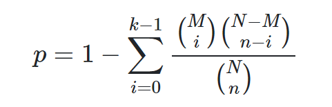

Pathway Analysis
Contents
Pathway Analysis#
The main purpose of Pathway Analysis tools is to analyze data obtained from high-throughput technologies, detecting relevant groups of related genes that are altered in case samples in comparison to a control. In this manner, Pathway Analysis methods seek to overcome the problem of interpreting overwhelmingly large lists of important, but isolated genes detached of biological context, which are the main output of most basic high-throughput data analysis, as differential expression analysis. A standard approach to addressing this problem is pathway enrichment analysis, which summarizes the large gene list as a smaller list of more easily interpretable pathways. Pathways are statistically tested for over-representation in the experimental gene list relative to what is expected by chance, using several common statistical tests that consider the number of genes detected in the experiment, their relative ranking and the number of genes annotated to a pathway of interest.
A principled way to interpret such gene sets is to compare them with a database of well-annotated gene sets, such as biological pathways. For example, one of the most widely used approach, Over-representation Analysis (ORA), counts the number of common genes shared by an input gene set and each annotated gene set, and applies a statistical test, such as the cumulative hyper-geometric test, to calculate the statistical significance of the overlap. A p-value cutoff, e.g. 0.05, is then applied to select the annotated gene sets that have statistically significant overlaps with the input gene set. An extension of ORA known as the Gene Set Enrichment Analysis (GSEA) tries to eliminate the need for an ad hoc cutoff (e.g. expression fold change) that is often used in defining the input gene set. GSEA works by ranking all genes in the genome according to, say, level of differential expression, and tests whether any annotated gene set is ranked unexpected high or low through running-sum statistic.
Learning Objectives:#
Introduction to enrichment analysis
Downloading terms, pathway gene set from GO and KEGG.
Saving results to GMT file format.
Enrichment analysis#
Gene Set Enrichment Analysis methods help gain insight into obtained gene lists by identifying pathways that are enriched in a gene list more than would be expected by chance. The three major steps involved the process include; definition of a gene list from omics data, determination of statistically enriched pathways, and visualization and interpretation of the results.
Enrichment analysis using ORA#
Over-representation (or enrichment) analysis is a statistical method that determines whether genes from pre-defined sets (ex: those belonging to a specific GO term or KEGG pathway) are present more than would be expected (over-represented) in a subset of your data.
The p-value can be calculated by hypergeometric distribution.

where N is the total number of genes in the background distribution, M is the number of genes within that distribution that are annotated (either directly or indirectly) to the gene set of interest, n is the size of the list of genes of interest and k is the number of genes within that list which are annotated to the gene set. The background distribution by default is all the genes that have annotation.
Over Representation Analysis Using GO#
library(tidyverse)
data <- read_csv("./data/DE_genes.csv")
Error in read_csv("./data/DE_genes.csv"): could not find function "read_csv"
Traceback:
data.head()
mask <- data$adj.P.Val < 0.05 &
abs(data$logFC) > log2(2)
deGenes <- rownames(data[mask,])
deGenes
length(deGenes)
geneUniverse <- rownames(data)
length(geneUniverse)
In order to assess functional enrichment, both DE gene list and gene universe must be annotated in Entrez IDs:
library(org.Hs.eg.db)
deGenes <- unlist(mget(deGenes, envir=org.Hs.egENSEMBL2EG,
ifnotfound = NA))
geneUniverse <- unlist(mget(geneUniverse, envir=org.Hs.egENSEMBL2EG,
ifnotfound = NA))
The GO enrichment analysis using clusterProfiler is performed by
library(clusterProfiler)
ans.go <- enrichGO(gene = deGenes, ont = "BP",
OrgDb ="org.Hs.eg.db",
universe = geneUniverse,
readable=TRUE,
pvalueCutoff = 0.05)
tab.go <- as.data.frame(ans.go)
tab.go<- subset(tab.go, Count>5)
tab.go[1:5, 1:6]
Visualization#
All analyses performed with clusterProfiler can be visualized by different plots:
library(enrichplot)
p1 <- barplot(ans.dis, showCategory=10)
p1
p2 <- dotplot(ans.kegg, showCategory=20) + ggtitle("KEGG")
p3 <- dotplot(ans.dis, showCategory=20) + ggtitle("Disease")
plot_grid(p2, p3, nrow=2)
p4 <- upsetplot(ans.dis)
p4
p5 <- emapplot(ans.kegg)
p5
install.packages("cowplot")
cowplot::plot_grid(p1, p3, p5, ncol=2, labels=LETTERS[1:3])
Enrichment Analysis using FGSEA#
This submodule describes FGSEA, one of the tools for evaluating pathway enrichment in transcriptional data and it stands for Fast preranked Gene Set Enrichment Analysis (GSEA). It can quickly and accurately calculate arbitrarily low GSEA P-values for a collection of gene sets based on an adaptive multi-level split Monte-Carlo scheme.
Typical experimental design consists in comparing two conditions with several replicates using a differential gene expression test followed by preranked GSEA performed against a collection of hundreds and thousands of pathways. However, the reference implementation of this method cannot accurately estimate small P-values, which significantly limits its sensitivity due to multiple hypotheses correction procedure. FGSEA, on the other hand, is able to estimate arbitrarily low GSEA P-values with a high accuracy in a matter of minutes or even seconds.
GSEA Enrichment Analysis#
Inputs:#
gene_list = Ranked gene list ( numeric vector, names of vector should be gene names) GO_file= Path to the “gmt” GO file on your system. pval = P-value threshold for returning results
Steps#
Run GSEA (package: fgsea)
Collapse redundant GO terms using a permutation test
Return GSEA plot and data.frame of results
FGSEA Using GO#
library(tidyverse)
data <- read_csv("./data/DE_genes.csv")
data
mask <- data$adj.P.Val < 0.05 &
abs(data$logFC) > log2(2)
deGenes <- rownames(data[mask,])
deGenes
length(deGenes)
geneUniverse <- rownames(data)
length(geneUniverse)
One can make an enrichment plot for a pathway:#
plotEnrichment(examplePathways[["5991130_Programmed_Cell_Death"]],
exampleRanks) + labs(title="Programmed Cell Death")
Or make a table plot for a bunch of selected pathways:#
topPathwaysUp <- fgseaRes[ES > 0][head(order(pval), n=10), pathway]
topPathwaysDown <- fgseaRes[ES < 0][head(order(pval), n=10), pathway]
topPathways <- c(topPathwaysUp, rev(topPathwaysDown))
plotGseaTable(examplePathways[topPathways], exampleRanks, fgseaRes,
gseaParam=0.5)
FGSEA Enrichment Analysis With KEGG Data#
# To load the GMT file for enrichment analysis, we can use GSA.read.gmt function available in the GSA R package. Here is the code to install the package and load the GMT file
suppressMessages({
suppressWarnings(install.packages("GSA"))
suppressPackageStartupMessages({
suppressWarnings(library(GSA))
})
})
# Load the GMT file from disk, we use "invisible" function to supress the excessive output message from the "GSA.read.gmt" function
invisible(capture.output(pathways <- GSA::GSA.read.gmt("./data/KEGG_pathways.gmt")))
# View first five pathways and related gene sets
pathways$genesets[1:5]
# View the name of the pathways
pathways$geneset.names[1:5]
# View the description of each pathway
pathways$geneset.descriptions[1:5]
FGSEA Using KEGG#
To load the GMT file for enrichment analysis, we can use GSA.read.gmt function available in the GSA R package. Here is the code to install the package and load the GMT file#
suppressMessages({ suppressWarnings(install.packages(“GSA”)) suppressPackageStartupMessages({ suppressWarnings(library(GSA)) }) })
Load the GMT file from disk, we use “invisible” function to supress the excessive output message from the “GSA.read.gmt” function#
invisible(capture.output(pathways <- GSA::GSA.read.gmt(“./data/KEGG_pathways.gmt”))) pathways
View the name of the pathways#
pathways$geneset.names[1:5]
View the description of each pathway#
pathways$geneset.descriptions[1:5]
#//GeneList DE <- readRDS(“./data/DE_genes.rds”)
Get p-value from DE results#
gene_list <- DE$adj.P.Val #// Gene List gene_list GSEA = function(gene_list, pathways, pval) { set.seed(54321)
library(dplyr) library(fgsea) if ( any( duplicated(names(gene_list)) ) ) { warning(“Duplicates in gene names”) gene_list = gene_list[!duplicated(names(gene_list))] } if ( !all( order(gene_list, decreasing = TRUE) == 1:length(gene_list)) ){ warning(“Gene list not sorted”) gene_list = sort(gene_list, decreasing = TRUE) }
myGO = fgsea::gmtPathways(pathways)
fgRes <- fgsea::fgsea(pathways = myGO, stats = gene_list, minSize=15, ## minimum gene set size maxSize=400, ## maximum gene set size nperm=10000) %>% as.data.frame() %>% dplyr::filter(padj < !!pval) %>% arrange(desc(NES)) message(paste(“Number of signficant gene sets =”, nrow(fgRes)))
message(“Collapsing Pathways —–“) concise_pathways = collapsePathways(data.table::as.data.table(fgRes), pathways = myGO, stats = gene_list) fgRes = fgRes[fgRes\(pathway %in% concise_pathways\)mainPathways, ] message(paste(“Number of gene sets after collapsing =”, nrow(fgRes)))
fgRes\(Enrichment = ifelse(fgRes\)NES > 0, “Up-regulated”, “Down-regulated”) filtRes = rbind(head(fgRes, n = 10), tail(fgRes, n = 10 ))
total_up = sum(fgRes\(Enrichment == "Up-regulated") total_down = sum(fgRes\)Enrichment == “Down-regulated”) header = paste0(“Top 10 (Total pathways: Up=”, total_up,”, Down=”, total_down, “)”)
colos = setNames(c(“firebrick2”, “dodgerblue2”), c(“Up-regulated”, “Down-regulated”))
g1= ggplot(filtRes, aes(reorder(pathway, NES), NES)) + geom_point( aes(fill = Enrichment, size = size), shape=21) + scale_fill_manual(values = colos ) + scale_size_continuous(range = c(2,10)) + geom_hline(yintercept = 0) + coord_flip() + labs(x=”Pathway”, y=”Normalized Enrichment Score”, title=header) + th
output = list(“Results” = fgRes, “Plot” = g1) return(output) }
## Enrichment analysis using gsa
# // GSA using GO
# // GSA with KEGG